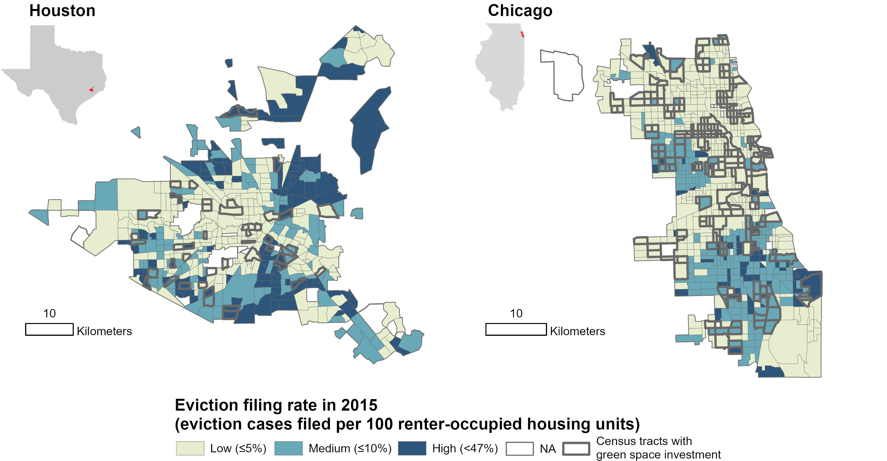
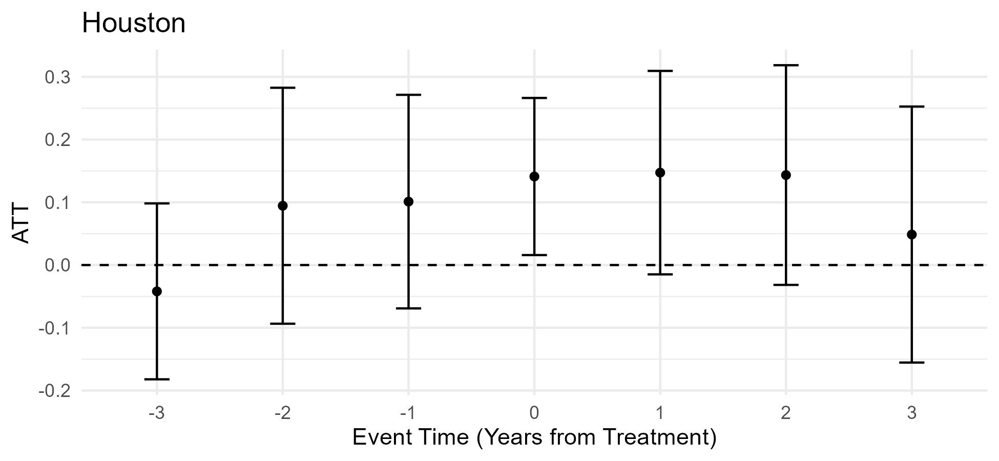
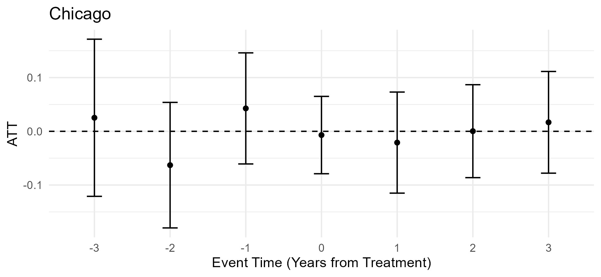
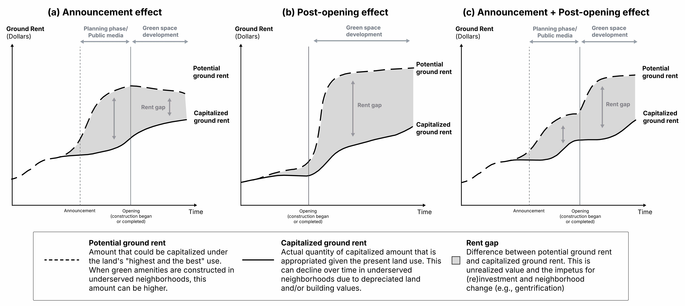

연구 / 시각적 결과
Visual Findings
연구 01 / Do green space investments drive evictions? Evidence from Houston and Chicago
휴스턴과 시카고의 상이한 특성
휴스턴과 시카고는 미국에서 인구가 많은 도시이지만, 도시 구조와 계획, 공원 체계와 녹지 형평성, 퇴거법 및 세입자 보호 측면에서
상당한 차이를 보입니다. 예를 들어 휴스턴에는 용도지역제가 없으며 시카고에서 시행되는 포용주택과 같은 진보적 정책도 부족합니다.
기존 공원 공급 측면에서 시카고 주민의 90%는 공원까지 보행 가능한 거리(약 805m)에 거주하며, 시는 주민 1인당 공원·레크리에이션에
174달러를 투자했습니다. 반면 휴스턴 주민 중 공원 반경 0.5마일 (약 402m) 이내에 거주하는 비율은 48%에 불과하고, 1인당 지출도 37달러로 훨씬 낮았습니다.
두 도시의 퇴거와 세입자 보호 제도 역시 다릅니다. 휴스턴에는 시카고 수준으로 세입자 권리를 보호하는 시 조례가 없습니다.
예를 들어 2026년에 도입된 세입자 보호 조례는 이사 부담을 상쇄하기 위해 임대인에게 상당한 이전 비용을 부과하고,
정당한 사유에 의한 퇴거 규정에 더 엄격한 기준을 적용하여 기존 규정을 강화했습니다. 반대로 텍사스 상원법안 38호는
세입자가 퇴거 심리에서 반소를 제기할 수 없도록 하고, 퇴거에 항소하려면 임대료를 납부해야 하도록 법을 변경해 퇴거 절차를
더 빠르게 만들었습니다. Figure 1은 두 도시의 2015년 저·중·고 퇴거 신청률을 보여줍니다. 휴스턴은 시카고보다 퇴거 사건
신청이 더 많은 경향이 있으며, 이는 임대인 친화적 또는 세입자 친화적인 서로 다른 법과 절차에 기인할 수 있습니다.
이러한 뚜렷한 차이에도 두 도시에는 공통된 기제, 즉 녹지 지대 격차가 존재합니다. 이는 임대인이 세입자를 퇴거시키고
임대료를 올려 더 큰 이윤을 실현할 수 있는 기반이 됩니다.

녹지 투자는 퇴거 위험을 높이는가?
녹지 투자는 특정 조건에서 저개발 및 소외된 지역의 퇴거 위험을 높일 수 있습니다. 휴스턴에서는 녹지 투자가 이루어진 해에 처치집단의 퇴거율이 유의하게 증가했습니다. 비교집단 대비 처치집단의 퇴거율은 평균 15% 증가할 가능성이 있었습니다(p = 0.031). 특히 2015년에 녹지 투자가 도입된 처치 집단에서는 퇴거율이 28.2% 증가했습니다(p = 0.001). 반면 시카고 처치집단에서는 녹지 투자 후 퇴거의 유의한 변화를 발견하지 못했습니다.


연구 02 / How do green space investments shape the rent gap? Evidence from Houston
녹지 투자를 통한 (녹지) 지대 격차 형성 시나리오

도시 녹화 사업은 사회적으로 혜택을 덜 받는 지역의 잠재 지대를 높일 수 있습니다. 잠재 지대는 토지의 "최유효이용"에서 기대되는 지대로 정의됩니다(Smith, 1979). 즉, 지대의 가치가 이론적으로 가장 높을 때 그 지대에서 발생할 수 있는 자본을 잠재 지대라고 지칭할 수 있습니다. 개발사업 계획 발표나 언론 보도에 대한 선제적 반응인 발표 효과 (announcement effect)는 녹지 개장 전에 발생해 잠재 지대를 높일 수 있습니다(Figure 3(a)). 개장 후 효과 시나리오(Figure 3(b))에서는 계획 단계에서 녹지 지대 격차가 뚜렷하게 확대될 것으로 기대하지 않습니다. 예를 들어, 능동 교통 시설을 포함한 소규모 공원은 언론의 주목을 거의 받지 못하더라도 완공 후 젠트리피케이션을 촉진할 수 있습니다(Rigolon & Németh, 2020). 일부 투자자 혹 개발자들은 잠재 이윤을 극대화하기 위해 계획 단계에 부동산에 투자할 수 있지만, 이 시점에는 녹지 지대 격차의 형성이 불확실하여 투자가 위험하므로 사업 발표의 효과는 제한적일 수 있습니다(Figure 3(c)).
녹지 투자는 이질적으로 지대 격차 형성에 기여하는가?
평균적으로 녹지 투자는 초기 지대 격차 형성과 관련되며, 개장 후 성장이 뚜렷하게 나타났습니다. 녹지 투자가 지대 격차
형성에 미치는 처치효과는 프로젝트 규모, 기존 공원 수준, 입지 특성(TIRZ 및 경전철)에 따라 이질적입니다.
Figure 4는 두 가지 모형 설정, 즉 1) 발표 효과와 2) 개장 후 효과에서 전체 표본과 하위표본의 이벤트 스터디 그래프를 제시합니다.
본 연구 결과는 대규모 녹화 사업에서 지대 격차가 더 빨리 그리고 오랫동안 벌어질 수 있음을 시사하며, 이는 지대 격차에 대한 발표 및
개장 후 효과가 결합된 시나리오에 해당합니다. 소규모 녹지는 개장 전 시장의 주목을 거의 받지 못해 투자 이후에만
토지 가치 상승을 보일 수 있습니다. 이와 유사하게 기존 녹지가 부족한 지역은 미적·경제적 가치에 대한 인식이 더 크게
상승할 수 있어, 녹지가 충분한 지역보다 부동산 시장에 더 빠르고 강하게 반응할 수 있습니다. 또한 TIRZ와 경전철 노선
인근의 녹지 투자에서 뚜렷한 발표 및 개장 후 효과를 관찰했으며, 이러한 목표 지향적 도시개발 맥락이 녹지 투자에 따른
지대 격차 형성 효과를 강화함을 시사합니다.